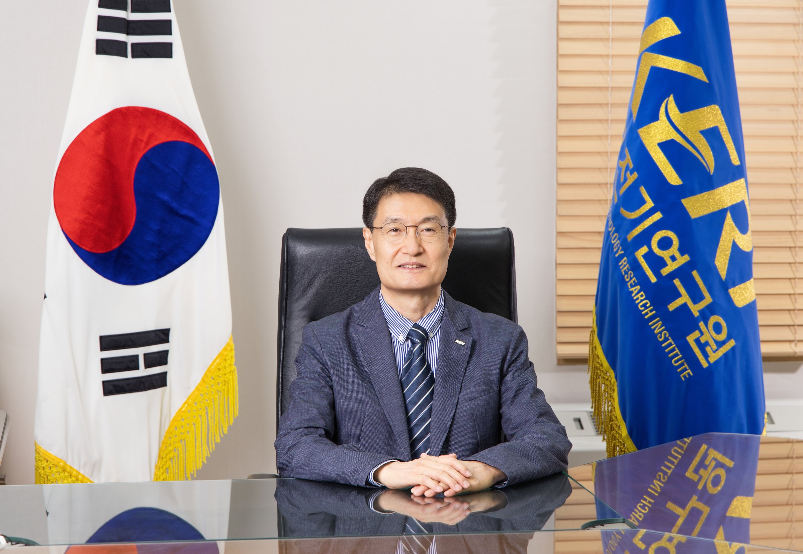

50th Anniversary Message
“세상을 밝힌 50년,
더욱 빛날 100년”
한국전기연구원 원장 강상희

한국전기연구원 50주년 온라인 역사관에 오신 것을 환영합니다.
1976년, 보이지 않는 전기를 다루던 척박한 환경의 작은 연구소는 어느덧 대한민국 산업의 대동맥에 에너지를 공급하는 거대한 심장이 되었습니다.
쉼 없이 전기 기술을 연구하고, 신뢰 높은 시험·인증을 이어온 KERI의 지난 반세기는 국가 기술의 단단한 기반이자, 세상을 밝히는 환한 빛이었습니다.
대한민국 전기산업이 걸어온 길에는 언제나 한계를 뛰어넘는 KERI의 도전이 있었습니다. 기술 자립이 절실했던 불모지의 시절부터 세계 최정상급 기술력을 겨루는 오늘에 이르기까지, 한국전기연구원은 국가와 산업이 필요로 하는 핵심 기술을 적기에 개발하며 우리나라 경제 발전과 호흡을 함께해 왔습니다.
초고압 송전기술과 차세대 전력계통운영시스템(EMS)으로 안정적인 전력 공급의 토대를 마련하고, 원전 제어기술과 첨단 전기추진 기술로 국가 핵심 기술 자립과 안보에 기여했습니다. 또한 전력반도체와 첨단 이차전지, 신소재 등 미래 산업의 판도를 바꿀 초격차 기술을 개척하는 한편, 세계 최고 권위의 시험·인증 역량(STL)을 바탕으로 우리 기업들이 글로벌 시장에 진출할 수 있도록 든든한 날개가 되어 주었습니다.
이 모든 눈부신 기적은 결코 하루아침에 이루어진 것이 아닙니다. 어려운 여건 속에서도 묵묵히 땀 흘린 선배들의 헌신, 끊임없이 혁신에 도전해 온 연구자들의 열정, 그리고 KERI를 믿고 성원해 주신 산업계와 국민 여러분이 계셨기에 가능한 역사였습니다.
이곳 '온라인 역사관'은 KERI가 지나온 위대한 유산(KERITAGE)을 보존하는 공간이자, 그 안에 담긴 땀방울과 성취의 이야기를 미래 세대와 나누는 소통의 장입니다.
흩어져 있던 50년 역사의 조각들을 모아 KERI가 걸어온 길을 되짚고, 그 발자취가 대한민국 산업 발전사(史)와 어떻게 맞닿아 있는지 생생하게 조명하고자 합니다.
이제 우리는 지난 50년의 성취를 발판 삼아 새로운 100년을 향해 담대하게 나아갑니다. 인공지능(AI)과 첨단산업의 성장, 에너지 대전환의 가속화로 '전기화(Electrification)'의 중요성이 그 어느 때보다 커지고 있습니다. KERI는 국가 에너지 고속도로를 설계하는 ‘최고의 싱크탱크’이자 첨단 산업을 수호하는 ‘강력한 방패’로서 대한민국의 에너지 미래를 굳건히 뒷받침하겠습니다.
이곳에 기록된 발자취를 통해 KERI의 역사를 깊이 이해하는 것을 넘어, 대한민국 전기 기술의 눈부신 미래를 함께 그려보는 뜻깊은 계기가 되기를 바랍니다.
감사합니다.
한국전기연구원 원장강상희